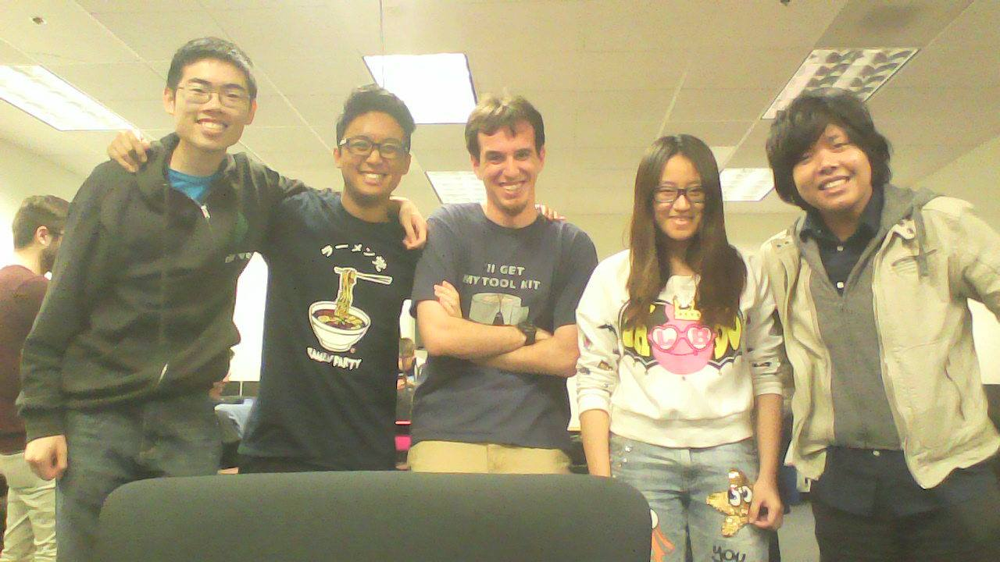
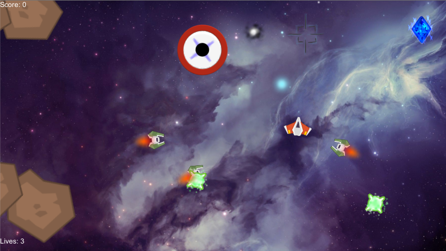
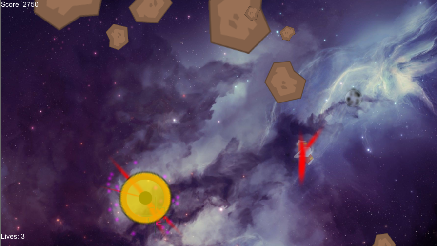

Asteroids 9000
Other Team Members
Dylan Cockerham
Hiroshi Estrada
Carl Pacheco
Ao Li


Asteroids 9000 is a game created during a game jam hosted by the VGDC club at UCI.
The Game Jam that this game was creating during was called the Tobii Game Jam because each team had to utilize the Tobii eye tracker into their game. Although our game mainly uses the tobii eye tracker for the game, it does have a mouse mode implemented.
